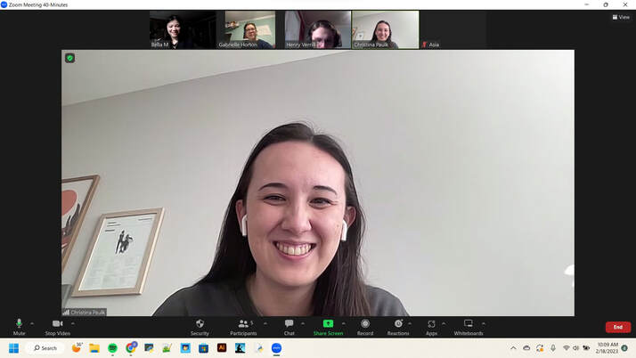
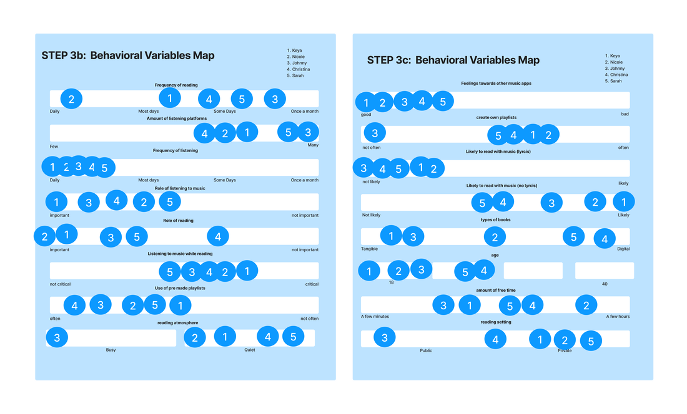
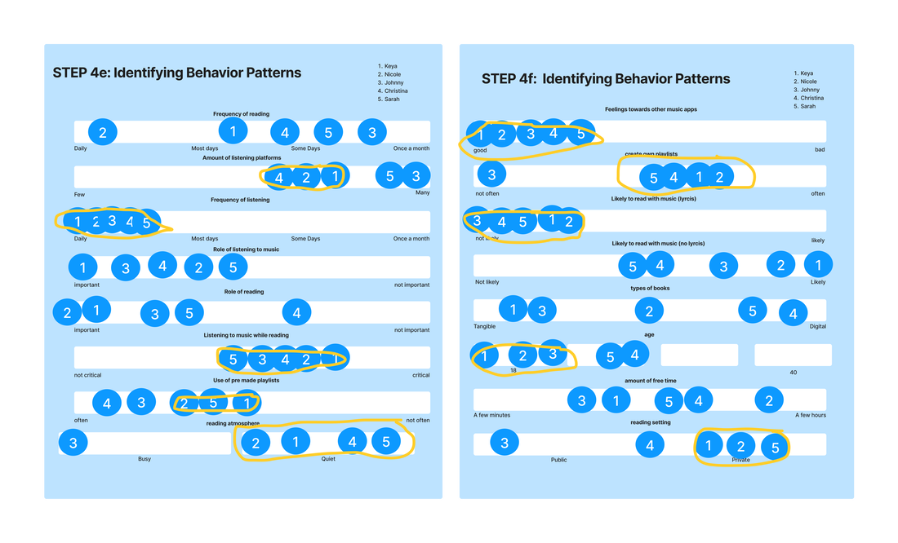
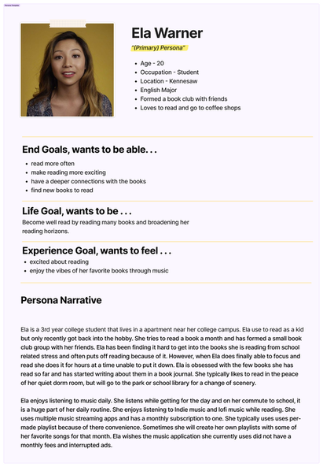

BookTunes is a music streaming service designed for readers to find music relating to their books.
Design a mobile app that infuse reading and music infused into one app to create an immersive unique reading experience.
Goal-Directed Design (GDD)
4
Figma, FigJam, Discord, Google Docs, Canva
Interaction design, user research, prototyping
January 2023 – April 2023
Research Report (Links to Dropbox with pdf file)
Prototype (Links to BookTunes' Figma files)
This process page will cover the creation of the prototype, BookTunes. This project was created for my Interaction Design 1 class at Kennesaw State University. We were assigned to create a mobile app prototype using Alan Cooper’s Goal Directed Design (GDD) method. This method was taught to us because it covers the full range of what an interaction designer might do in a career. After each student pitched their idea we ranked the pitches from most to least favorite. I ranked Bella Margiano’s BookTunes pitch as number one as it seemed like a creative combination of my favorite hobbies. After being placed on the BookTunes team we began the research process. The rest of this page will explain GDD and each phase of GDD utilized on this project (Research, Modeling, Requirements, Frameworks, Refinement), and discuss what I learned while working on this project.
When creating BookTunes we used Alan Cooper’s Goal Directed Design as the guiding method. We learned GGD by reading from About Face(4th Edition) The authors believe designers should be a part of the research process. Cooper et al. finds that when designers focus on users’ goals, expectations, attitudes, and aptitude that can come up with solutions that people find both powerful and pleasurable to use. (xx) For this class project, GDD was modified to fit the parameters of a 16-week college course. We utilized the following phases of GDD:
We as designers did research to better understand the products user along with business and market context. During this phase we conducted a kickoff meeting, created or collected a literature review and competitive audit, completed stakeholder interviews, and completed user interviews. User research is the foundation on which our design was built.
Since this was done a for a class there were no actually stakeholders therefore only a hypothetical kickoff meeting among group members was conducted on FigJam, an online collaborative whiteboard. In this hypothetical kickoff meeting we filled out a worksheet that placed us in the position of stakeholders to imagine what stakeholder might want out of BookTunes. We crafted a Problem Statement, which defines the purpose and reflects a situation that needs changing, and we listed assumptions about the business and users.
The current state of the BookTunes industry lacks a niche-related app that focuses on readers and enhancing the reading experience and has focused primarily on the general generic use of listening to music. What existing products/services fail to address is the desire from readers for an app that offers playlist and music that corresponds with books. Our product/service will address this gap by capitalizing on this niche market by offering readers a central music hub with playlists that correspond with different books and genres.
A literature review is a part of the research phase that provides insight to the design team by reviewing any literature pertaining to the product or its domains. This provides context to our designs and encourages us to make better design decisions based off research.
Because our app is fusing reading and music together, we researched music industry as it relates to streaming, the book industry and whether there was a demand for this app. The full Literature Review can be read in the Research Report. The key take-aways are:
In the competitive audit we examine the products chief competitors to understand better the opportunities and constraints for the product as it relates to other competitors. BookTunes is a music streaming service with a focus on reading. So, we looked to the leaders of the music streaming industry as well as apps dedicated to readers. For music streaming we focused primarily on Spotify and YouTube. For reader focused apps we looked to GoodReads, taking into account what it could teach us about genre organization and book recommendations.
Our analysis covers both the negative and positive attributes of each app, their prices, and popular features. The design team discovered that the apps had many useful features which could be integrated into our app design. However, there were also a few features that wouldn’t be relevant to our app or that could be improved upon.
Stakeholder interviews are done for the design team to get more information from decision makers. As stated in a previously, this project does not have real clients so there are no stakeholders. To simulate a stakeholder interview the team used the assumption statements from the kickoff meeting worksheet. During the meeting the design team learned:
Before starting the user research interviews for the project, the design team had to make a persona hypothesis which defines the types of users that may use the product. During this process we considered how the users would be using the app and hypothesized about how many possible user types there may be. We concluded there’d only be one user type for this project.
The main goal for the interviews is to obtain a better idea of the lives, behaviors, needs, and goals of potential users. When it came to finding people for the interviews, our team wanted to have a variety of people that fit our persona hypothesis and could provide an adequate amount of information for our research. To ensure each interviewee was a reader we looked into recruiting individuals that were either a part of a book club or a school writing club. The design team was able to successfully find five readers that fit our persona hypothesis and provide an interesting insight of how music and reading fits into their daily lives.
We conducted five interviews total, 2 in person and 3 using Using tools Discord and Zoom. I led one in-person interview and took notes for the others. Participant ages ranged from 18 - 28 years old and consisted of College students and/or full time working employees. During the interviews the design team asked a series of questions about the individuals, their habits and where music and reading falls into their lives.
To understand and reflect on our interview sessions, we used an affinity maps to take notes and break down our thoughts into cohesive categories. This system allowed teammates to spot patterns and reach a team consensus over what was discussed in the interview. It is a two step process where each team member individually writes down their thoughts, then each person states their findings, and the team leader organizes the information into categories of patterns. Participants were categorized by:
These categories helped with finding dominant patterns in interview responses and we could then move on to the Modeling Phase to make sense of the user interviews and research.
In this phase team members gathered each of our notes from the five interviews to create a descriptive model of users called personas based on our research findings. “Personas provide us with a precise way of thinking and communicating about how groups of users behave, how they think, what they want to accomplish, and why. Personas are not real people, but they are assembled from the behaviors and motivations of the many actual users we encounter in our research.” (Cooper et al., 62) The persona is also able to convey our thought process and logic behind our design choices to the stakeholders.
We began by identify behavioral variables then mapping each interviewee (signified by a number) to said behavioral variables on a scale. Then we identified significant behavior patterns(where subjects clustered).
 Once this was done we could synthesize characteristics, define goals and expand the description of attributes and behaviors. We then compiled the information into a Persona Template provided by our professor.
